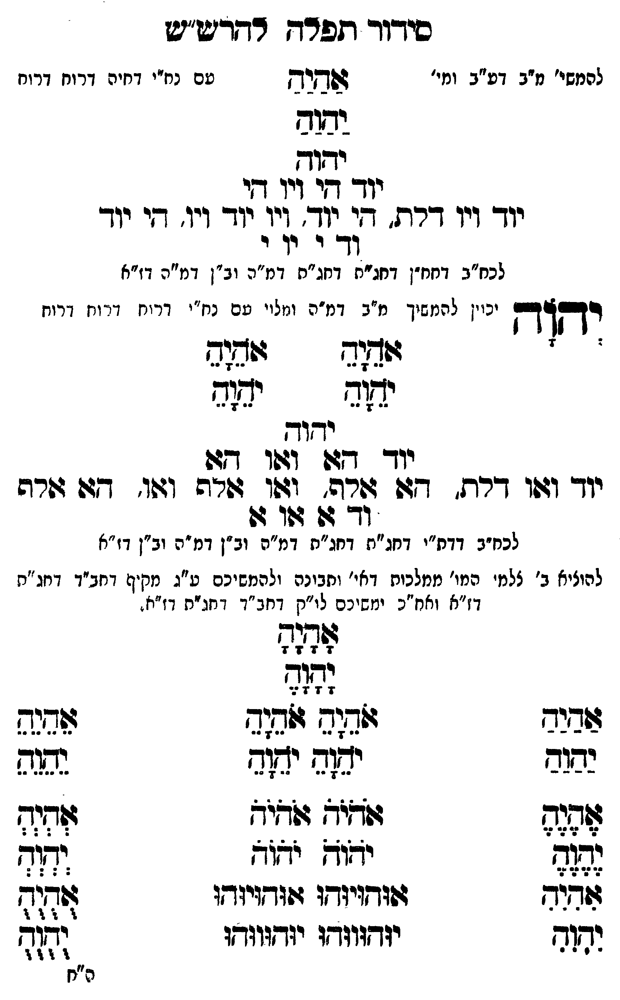

Neue Klartextfassung
=== טבלה === [טור ימין] אלף הי יוד הי [טור אמצעי] [ה"ג] יֶהֶוֶהֶ יְהְוְהְ יֹהֹוֹהֹ יִהִוִהִ יֻהֻוֻהֻ [טור שמאל] אלף הא יוד הא === סוף טבלה === אלף הה יוד הה [להמשיך מ"ב דע"ב ומי' עם נח"י דחיה דרוח:] אַהַיַהַ יַהַוַהַ יהוה יוד הי ויו הי יוד ויו דלת הי יוד ויו יוד ויו הי יוד וד י וי י [לכח"ב דחח"ן דחג"ת דחג"ת דמ"ה וב"ן דמ"ה דז"א] יְהוָה [יכוין להמשיך מ"ב דמ"ה ומלויו עם נח"י דרוח דרוח דרוח] === טבלה === [טור ימין] אָהָיָהָ יָהָוָהָ [טור אמצעי] [טור שמאל] אָהָיָהָ יָהָוָהָ === סוף טבלה === יהוה יוד הא ואו הא יוד ואו דלת, הא אלף, ואו אלף ואו, הא אלף וד א או א [לכח"ב דדת"י דחג"ת דחג"ת דמ"ה וב"ן דמ"ה וב"ן דז"א] [להעלות ב' צלמי המו' ממלכות דאי' ותבונה ולהמשיכם ע"ג מקיף דחב"ד דחג"ת דז"א וחו"ב ימשיכם לו"ק דחב"ד דחג"ת דז"א.] === טבלה === [טור ימין] אַהַיַהַ יַהַוַהַ אֶהֶיֶהֶ יֶהֶוֶהֶ אִהִיִהִ יִהִוִהִ [טור אמצעי] אָהָיָהָ יָהָוָהָ אֹהֵיָהֵ אֹהֵיָהֵ יֹהֵוָהֵ יֹהֵוָהֵ אֹהֹיֹהֹ אֹהֹיֹהֹ יֹהֹוֹהֹ יֹהֹוֹהֹ אוּהוּיוּהוּ אוּהוּיוּהוּ יוּהוּווּהוּ יוּהוּווּהוּ [טור שמאל] אֵהֵיֵהֵ יֵהֵוֵהֵ אְהְיְהְ יְהְוְהְ אֻהֻיֻהֻ יֻהֻוֻהֻ === סוף טבלה ===
Original gegen neue OCR · Niqqud für Vergleich ausgeblendet
Original
=== טבלה === [טור ימין] אלף הי יוד הי [טור אמצעי] [ה"ג] יהוה יהוה יהוה יהוה יהוה [טור שמאל] אלף הא יוד הא === סוף טבלה === אלף הה יוד הה [להמשיךK063-001 מ"ב דע"ב ומי' עםK063-002 נח"י דחיה דרוח:] אהיה יהוה יהוה יוד היK063-003 ויו הי יודK063-004 ויו דלת הי יודK063-005 ויו יוד ויו הי יוד ודK063-006 י וי י [לכח"בK063-007 דחח"ן דחג"ת דחג"תK063-008 דמ"ה וב"ן דמ"ה דז"א] יהוה [יכוין להמשיךK063-009 מ"ב דמ"ה ומלויו עםK063-010 נח"י דרוח ∅K063-011 דרוח דרוח] === טבלה === [טור ימין] אהיה יהוה [טור אמצעי] [טור שמאל] אהיה יהוה === סוף טבלה === יהוה יוד הא ואו הא יוד ואו דלת, הא אלף, ואו אלף ואו, הא אלף וד א או א [לכח"בK063-012 דדת"י דחג"ת דחג"ת דמ"ה וב"ן דמ"ה וב"ן דז"א] [להעלותK063-013 ב' צלמי המו'K063-014 ממלכות דאי' ותבונהK063-015 ולהמשיכם ע"גK063-016 מקיף דחב"ד דחג"ת דז"א וחו"בK063-017 ימשיכם לו"קK063-018 דחב"ד דחג"ת דז"א.] === טבלה === [טור ימין] אהיה יהוה אהיה יהוה אהיה יהוה [טור אמצעי] אהיה יהוה אהיה אהיה יהוה יהוה אהיה אהיה יהוה יהוה אוהויוהו אוהויוהו יוהוווהו יוהוווהו [טור שמאל] אהיה יהוה אהיה יהוה אהיה יהוה === סוף טבלה ===K063-019
OCR · fehlbar
סידוד ותפלרדך רדדיש"2 להמשי'K063-001 מ"ב דע"ב ומי' לחיש טםK063-002 נח"י דחיה דרוח דרוח זבוב י וך יוך דנK063-003 ויו דזי יוךK063-004 ויו דרת. חי יוד'K063-005 ויו יוד ויו. די יוך (- - יוK063-006 י לכח"בK063-007 דחח"ן דחנ"ח דחג"חK063-008 דמ"ה וב"ן דמ"ה דז"א יק"ך יכוין להנזשיךK063-009 מ"ב דמ"ה ומלוי טםK063-010 נח"י דרוח ורונזK063-011 דרוח ' 424 שבזב יד[ד יש(ב ידוך יוך גזה ו4פו דז יוך זגוו דרת. 277 דורה' ושו גזרה וזו. -ג: גו(רה ו- דן גוו גו לכח"בK063-012 דדת"י דחג"ת דחג"ת דמ"ה וב"ן דמ"ה וב"ן דז"א להוציאK063-013 ב' צלמ' המי'K063-014 ממלכות דאי' וחבונהK063-015 ולהמשיכם ט"גK063-016 מקיף דחב"ד דחג"ת דז"א ואח"כK063-017 ימשיכם לי"קK063-018 דחב"ד דחג"ת דז"ח. לא: לעל 6זבבב :(חוש גג( שדגנש נשגב יה(ש יש(ב נשגה ללז לע: לגג לל צלא יצוד. ילזצ פל ללא זדויזדו ז(זדויזדו 77 - ו( יודזזוודזו יזדקווודו גז ר"חK063-019